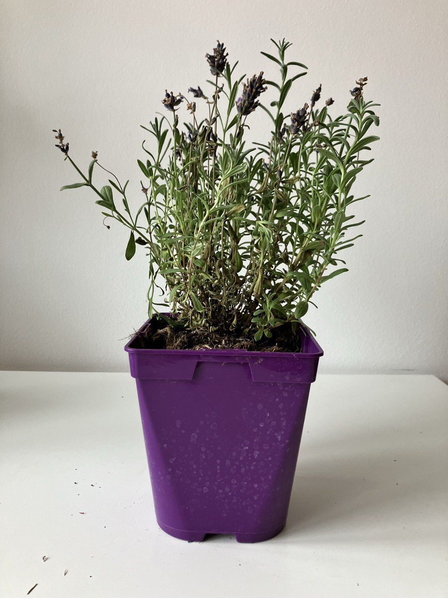

Activity
- Scheduled
- Prun 01.09.2024
Lavandula (Lavender) Plant Care Guide
Environment
Light
- Full Sun: Lavender plants thrive in full sun. Aim for at least 6 hours of direct sunlight each day. A sunny spot in your garden or near a south-facing window is ideal.
Soil
- Well-Draining Soil: Lavender prefers sandy, well-draining soil with a slightly alkaline pH. Amend heavy or clay soils with sand or gravel to improve drainage.
- Soil Mix: A mix of 1 part garden soil, 1 part sand or gravel, and 1 part compost works well for Lavender.
Temperature
- Warm Temperatures: Lavender thrives in temperatures between 60-80°F (15-27°C) during the day. It can tolerate cooler temperatures but should be protected from frost.
Routine jobs
Watering
- Watering Schedule: Water the Lavender deeply but infrequently. Allow the soil to dry out between waterings. Overwatering can lead to root rot, so it's important to ensure the soil is well-drained.
- Soil Moisture: During the growing season (spring and summer), water when the top inch of soil feels dry. Reduce watering in the fall and winter as the plant goes dormant.
Feeding
- Fertilization: Lavender doesn't require much feeding. Apply a balanced, slow-release fertilizer in the spring if needed. Too much fertilizer can lead to excessive foliage growth and reduced flowering.
Pruning
- Pruning Schedule: Prune Lavender plants annually to maintain their shape and encourage new growth. The best time to prune is in the spring, just as new growth begins.
- Pruning Technique: Remove about one-third of the plant's height, cutting just above a set of leaves. Avoid cutting into the woody stems, as they may not regrow.
Troubleshooting
- Common Pests: Lavender is relatively pest-resistant, but it can occasionally be affected by aphids, spider mites, and whiteflies. Treat infestations with insecticidal soap or neem oil.
- Fungal Diseases: Ensure good air circulation around the plant to prevent fungal diseases like powdery mildew. Avoid overhead watering and remove any infected foliage promptly.
Harvesting
- Harvest Time: Harvest Lavender flowers when they are fully open but before they start to fade. Cut the stems in the morning after the dew has dried for the best fragrance.
- Drying: Bundle the harvested stems and hang them upside down in a dark, dry, and well-ventilated area to dry. Once dried, the flowers can be used in sachets, potpourri, or for culinary purposes.